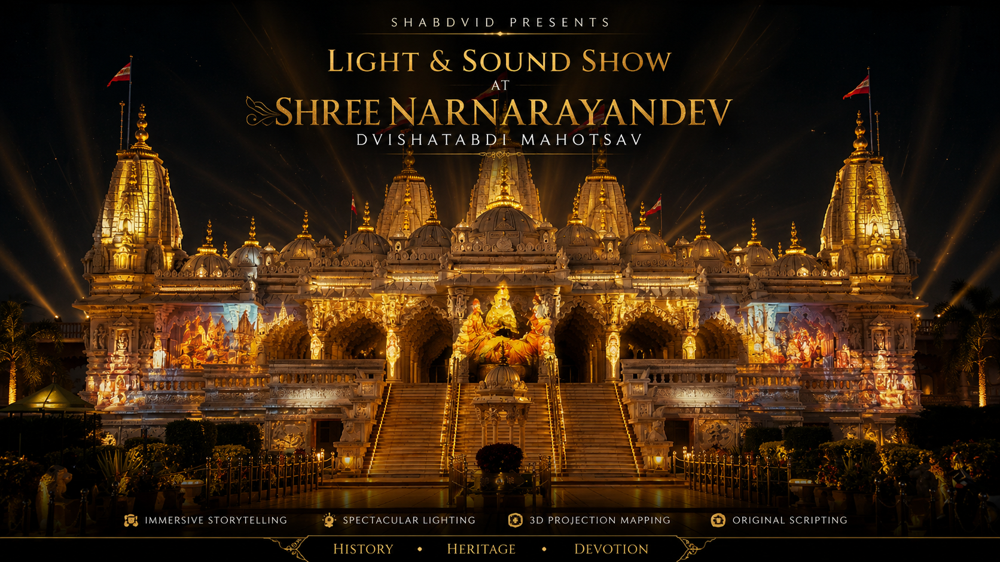

Shree Narnarayandev Dvishatabdi Mahotsav
CREATIVE ROLE • STORY & SCRIPT WRITERA grand Light & Sound Show created to celebrate the 200-year legacy of the Narnarayandev Gadi, bringing history, faith, and tradition to life through immersive storytelling, projection, music, and visual effects.
Watch Film →